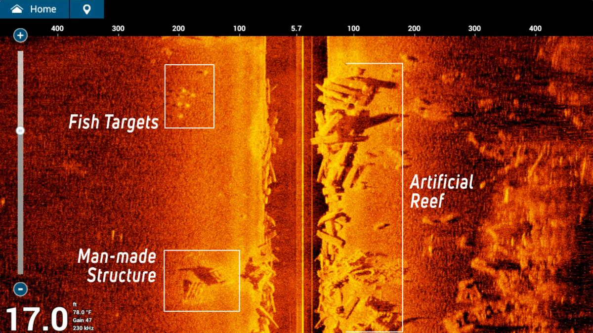

Fish finder specs read like a spec sheet for a surveillance drone. CHIRP, DownScan, SideScan, LiveScope, ClearVü, MEGA Imaging. Most of it is marketing terminology for technologies that are genuinely different from each other, and knowing what each one actually does changes what you should spend. For a kayak angler on Lac Saint-Louis or the St. Lawrence, several of these features are worth paying for. Others add cost without adding anything useful to how you fish.
Here's what each technology does, what it's worth, and what to buy at three price points.
Traditional Sonar vs. CHIRP
Traditional sonar fires a single frequency pulse, typically 83 or 200 kHz, and reads what bounces back. It works and it's what fish finders have run on for decades. The limitation is that a single frequency makes it harder for the unit to distinguish between closely spaced objects. Two fish sitting six inches apart may return as one blob. Bottom composition is harder to read accurately.
CHIRP (Compressed High Intensity Radar Pulse) sends a sweep of frequencies rather than a single pulse. Instead of a fixed 200 kHz ping, it might sweep from 150 to 240 kHz continuously. The return signal is processed against that sweep, which lets the unit separate targets that would blend together on traditional sonar. Fish appear as more defined arches. Bottom hardness comes back with more contrast. Suspended fish above vegetation are easier to separate from the weeds below.
The practical difference on Lac Saint-Louis: traditional sonar at 18 feet over a weed edge shows you fish arches if fish are clearly suspended. CHIRP shows you the same fish but also the individual fish holding within two feet of the weed top that traditional sonar bundles into the vegetation return. If you're fishing walleye or bass tight to structure, that distinction changes where you put your lure.
CHIRP is worth paying for. It's now standard on units above $150 and available on some below that. Don't buy a fish finder without it in 2026.
Down Imaging
Down imaging (Lowrance calls it DownScan, Humminbird calls it DI, Garmin calls it ClearVü) uses a much higher frequency sonar beam that's narrow and flat rather than the cone shape of traditional sonar. The result is a photographic-style image of what's directly below the transducer rather than the arch-and-line display of traditional sonar.
Structure reads differently. A submerged log shows as a log shape, not an ambiguous arch. Rocky bottom looks like rocky bottom. A school of baitfish below your kayak looks like a cloud of distinct individual fish rather than a smear of returns. The trade-off is that down imaging is harder to read in real time while moving because it doesn't show arches the way traditional sonar does. Most anglers run both views side by side and learn to cross-reference them.
For the Rivière des Mille-Îles and similar structure-heavy rivers, down imaging pays for itself quickly. You can distinguish a walleye suspended off the bottom of a drop-off from a submerged rock at the same depth. Traditional sonar alone makes that guess.
Side Imaging
Side imaging is the most misunderstood feature on a fish finder. Standard sonar shows you what's below your boat. Side imaging shoots sonar beams out to the sides, covering a band of water to your left and right as you move. The unit builds a picture of the bottom and structure beside you, not just beneath you.
On a kayak, side imaging at 60 feet of coverage per side means that a single pass down a weed edge shows you a 120-foot-wide picture of the bottom. You can see exactly where the edge of the weed bed is, where it has gaps, where there's a point or a depression, and where fish are holding alongside the structure you haven't passed directly over yet.

The image above is a real side imaging return. Fish targets show as bright spots to the left, a man-made structure appears as a defined rectangular shadow, and the artificial reef on the right comes back with the kind of detail that traditional sonar renders as a vague lump. The dark vertical band in the centre is directly beneath the boat.
The limitation is resolution at speed and distance. Side imaging works best at slow speeds (3 to 5 km/h) and loses detail beyond about 60 to 80 feet per side depending on depth. On shallow flats like the ones around Île-Perrot, the range is ample. In the deeper sections of the St. Lawrence, you're looking at fish that may be 40 feet below your kayak and 60 feet to the side, and the image quality drops.
Is it worth the extra cost? For anglers who fish flats, weed edges, and structure-heavy shallow water, yes. For deep river trolling or ice fishing, no. Side imaging is a feature worth having if your fishing style uses it; if you mostly fish vertical presentations in deep water, the money is better spent elsewhere.
GPS and Mapping
Every fish finder above $100 now includes GPS. The difference is in what charts come with the unit and how well the chartplotter integrates with the sonar.
The basic GPS function (marking waypoints, showing your track) is available on even the cheapest units. Mark where you caught fish, mark the spot where the sonar showed a school, navigate back to the same hole next session. This functionality is genuinely useful and works identically whether you're on a $130 Garmin Striker 4 or a $600 Lowrance HDS.
Where GPS pricing diverges is in preloaded charts. Garmin's Navionics charts cover Quebec's inland waterways well and include depth contours for Lac Saint-Louis, Lac des Deux Montagnes, and most of the accessible lakes in the Laurentians. Lowrance's C-MAP charts are comparable. Units that come with chart capability bundled in are more useful out of the box than units that require chart cards purchased separately. Check what's included before you buy.
For kayak fishing, the ability to build your own contour maps using the unit's sonar is one of the most underrated features available. The Garmin Striker Plus and Lowrance HOOK Reveal units both offer map creation. Make a dozen passes over a new lake and you have a depth contour map you built yourself. On lakes that aren't well-charted commercially, this is genuinely valuable.
LiveScope and Real-Time Scanning
LiveScope is Garmin's live sonar product. Lowrance has Active Target. Humminbird has MEGA Live. All three do the same thing: show you fish movement in real time rather than the historical scrolling display of standard sonar. You can watch a bass approach your lure, track a school of walleye, and see exactly how fish are reacting to your presentation.
It's extraordinary technology. It's also $700 to $1,000 for the transducer alone, not counting the head unit. For the anglers this guide is written for, it's beyond the scope. If you ever spend a day on the water with someone running live sonar, you'll understand why tournament anglers won't fish without it. But it's a different category of purchase, not a feature to weigh against CHIRP and side imaging at the $150 to $400 price point.
What to Buy: Three Price Points
Under $200: Garmin Striker 4
The Garmin Striker 4 runs around $130 to $150 and is the best entry-level choice for a kayak angler. It has CHIRP sonar (both high and wide beam), GPS with waypoint marking, and a clear 3.5-inch display that's readable in direct sunlight. No down imaging, no side imaging, no preloaded charts. What it does, it does well.
Installation on a kayak is straightforward. The transducer mounts through the scupper hole or via a RAM mount on the gunwale; no drilling required on most kayaks. Battery life on a small sealed lead-acid battery is a full day of fishing. This unit has been the starter fish finder recommendation for Quebec kayak anglers for three seasons running, and nothing at the price has beaten it.
$200 to $400: Lowrance HOOK Reveal 5 or Garmin Striker Plus 5cv
At the $250 to $350 range you get down imaging and GPS with basic chart functionality. The Lowrance HOOK Reveal 5 includes DownScan, a 5-inch display, and C-MAP charts. The Garmin Striker Plus 5cv includes ClearVü down imaging and GPS map-building capability. Either is a significant step up from a basic CHIRP unit.
For fishing the St. Lawrence and Lac Saint-Louis specifically, the chart integration makes a difference. You can see the depth contours overlaid with your sonar while you're fishing, which removes the guesswork from where you are relative to drop-offs and structure. The Garmin Striker Plus edges ahead for Quebec inland water because its map-building function handles lakes without existing commercial charts better.
$400 to $700: Humminbird HELIX 7 CHIRP SI GPS
The HELIX 7 with side imaging is the upper end of what makes sense for a kayak setup. You get a 7-inch display, CHIRP, down imaging, side imaging to 100 feet per side, and preloaded Navionics charts. It's a legitimately complete fish finder, and the MEGA Imaging transducer that comes with the SI models produces side imaging that looks like a photograph of the bottom.
The HELIX 7 is physically larger than a Striker or HOOK Reveal, which matters on a crowded kayak deck. Budget for a quality RAM mount; the unit's weight deserves proper support rather than the basic clamp mount. Battery draw is also higher; a 7 Ah sealed battery handles a full day but leaves no margin.
If you fish a lot of weed-edge structure around Lac Saint-Louis and the back bays of the St. Lawrence, the side imaging on the HELIX 7 will show you more in a single pass than you'd find in an hour of probing with standard sonar.
Transducer Placement on a Kayak
The transducer is where most kayak fish finder setups go wrong. A transducer mounted at the wrong angle, catching air bubbles on the hull, or positioned where it reads the kayak's fibreglass return instead of water gives you garbage readings regardless of how good the head unit is.
For a sit-on-top kayak, scupper hole installation keeps the transducer fully submerged and out of the way. Most of the major brands sell scupper hole transducer mounting kits. If your scupper holes aren't the right diameter, a dedicated transducer arm on the stern works well and allows you to adjust angle easily. Keep the transducer face parallel to the waterline. Tilt it even a few degrees and you'll lose signal quality.
For more on using a fish finder once you have one mounted, see our guide on How to Read a Fish Finder.

20+ years fishing Quebec's freshwater systems. Kayak angler, catch-and-release advocate, and founder of Sub Urban Anglers.
Read More About Me